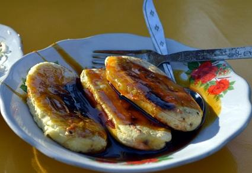

Pisang Epe

Pisang Epe adalah salah satu makanan tradisional khas asli makassar yang berbahan dasar pisang serta
campuran gula merah yang memiliki rasa yang sangat enak dan lezat, apalagi jika disantap dalam keadaan hangat,
wihh mantap banget deh pokoknya. Bagi anda yang kebetulan juga merupakan penggemar pisang epe itu dan
ingin tahu bagaimana resep membuat pisang epe makassar tersebut, maka berikut kami akan menguraikan resep
praktisnya untuk anda. Adapun bahan dan cara membuat pisang epe adalah sebagai berikut.
Bahan Membuat Pisang Epe Makassar:
~ 1 sisir pisang kepok matang atau mengkal (sesuai selera)
~ 300 gram gula aren, serut
~ 150 ml air
~ 1/4 sdt garam
~ 2 lembar daun pandan, simpulkan
Cara Membuat Pisang Epe Makassar:
~ Langkah pertama, membuat saus: rebus gula aren beserta air, garam dan daun pandang sampai gula menjadi larut dan kental. Kemudian angkat dan dinginkan.
~ Selanjutnya, rebus pisang bersama kulitnya sampai matang. Lalu kupas kulitnya. Kemudian tekan-tekan pisang agar menjadi pipih. Setelah itu bakar sambil dibolak balik sampai matang.
~ Terakhir, Setelah matang, sajikan pisang epe bakar panas dengan saus gula merah yang telah dibuat sebelumnya.
Sumber: masakankoki.com - Resep Membuat Pisang Epe Makassar Enak Praktis